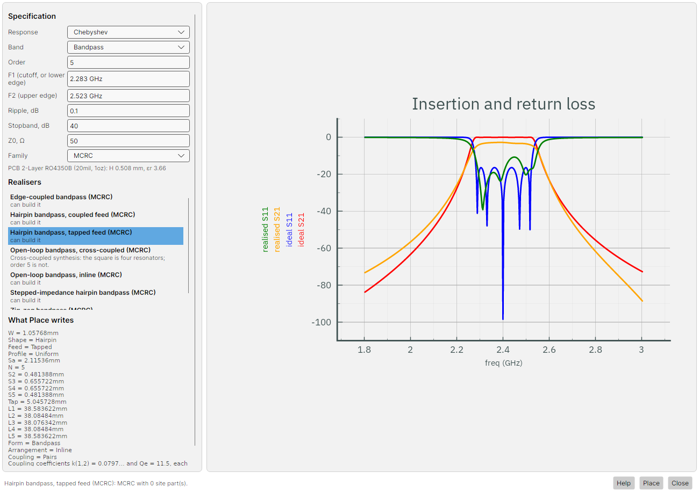
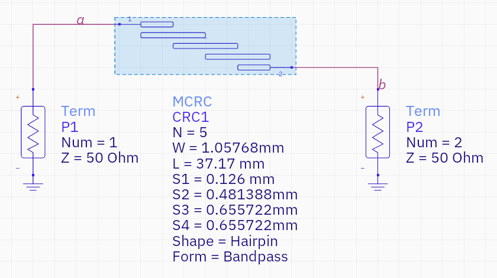
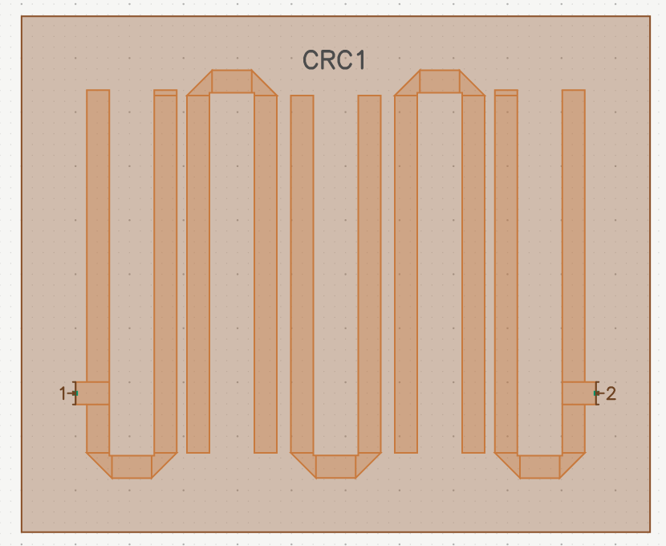

Filter Designer
A filter from its specification - the realisers that can build it, the ideal response beside the realised one, and the part placed with a part on each of its sites.
What it is
The Filter Designer turns a filter specification into a placed part. You state the response, the band, the order, the edges, the ripple and the terminations. Every realiser says whether it can build that filter, and if not, why. A realiser is one way to build a filter: a family and a form, such as a lumped ladder on the ladder part (MLAD), coupled resonators (MCRC) or a coupled array (MCLA).
The result is an ordinary part with its parameters filled in, plus an ordinary R, L, C or via on each of its sites. You can still edit it by hand, tune it, optimise it, lay it out and check it with LVS, like any part you placed yourself.

Opening it
There are three ways in:
- Tools ▸ Filter Designer… opens it on its default specification with every family listed. Place puts the filter into the schematic that was active when you opened it. With no schematic open, Place is greyed, and its tooltip says why.
- Filter Designer… on a schematic's right-click menu, on an empty spot of the canvas, does the same for that schematic.
- Select an MLAD, MCRC or MCLA in a schematic and press Synthesise… in its Properties. The Designer opens with that part's family preselected, and Place puts the filter into that schematic.
The specification
| Field | Meaning |
|---|---|
| Response | Butterworth or Chebyshev. Other responses appear as realisers add them. |
| Band | Lowpass, highpass, bandpass or bandstop. |
| Order | The number of resonators, or of ladder elements. |
| F1 | The cutoff of a lowpass or highpass, or the lower edge of a band, with its unit (2.2 GHz). |
| F2 | The upper edge of a band. |
| Ripple, dB | The passband ripple of a Chebyshev response. |
| Stopband, dB | The stopband floor of a response that has one. |
| Z0, Ω | The source and load. |
| Family | Show only the realisers of one family, or of any. |
The substrate comes from the schematic's technology: its default signal layer over its ground. Opened from Tools with no schematic, it comes from the workspace's default technology. The line under the form says which one it is. With no technology, a realiser that needs a substrate refuses, and says so.
A choice from a list takes effect at once. A typed field waits until you pause typing for a quarter of a second, so the realisers do not run on every keystroke.
The realisers
The list shows every realiser of the chosen family. Under each one, it first says can build it; checking…, or why it cannot: the band is not one it builds, the order is too high, and so on. That first answer is the realiser's quick check. Each realiser that passes it is then designed in the background, one after another, and its line changes to builds it or to refuses: and the reason. A realiser can pass the check and still refuse once it designs the filter, for example when a feed gap would be narrower than the board allows.
The first realiser that can build the filter is selected. If it refuses once designed, the next one is selected. Select another one to compare. A design is kept for as long as the application runs, so selecting a realiser again, or going back to an earlier specification, shows its response at once.
What Place writes lists the parameters the part will store and the value each site wants, plus any notes from the realiser.
The response
The plot shows |S21| and |S11| in dB, in two pairs:
- ideal: the lowpass prototype's own ladder, transformed to the band and run by the engine. For an even-order Chebyshev, port 2 is the prototype's own load, so the ripple you see is the response's and not a mismatch;
- realised: the selected realisation's test bench, run by the engine. That is the part with each site filled, on the substrate, between two ports of Z0.
The sweep runs from near DC to three times the cutoff for a lowpass, from a third of the cutoff to three times it for a highpass, and over two bandwidths either side of a band.
The ideal pair appears at once. The realised pair joins it when the selected realiser has been designed. That takes under a tenth of a second for the closed-form designs. The hairpins and open loops take a few seconds, because their couplings are solved on the part's circuit model, and a coupled array up to about ten, because its cross-section is fitted with a field solver. A bar beside Realisers shows while the window waits.
Place
Place puts the part to the right of everything already in the schematic. It then puts a part on each of its sites, the
way Place Site Parts does: an R, L or C of the site's value with the part's Footprint (or the board's
default land), and a via on each grounded end. It is one step: one Undo takes it all off again.


Running it headless
circuitrf filter does the same thing with no window. Without --realiser, it lists the realisers and whether each can
build the filter. With one, it writes the test bench as a .cnl (see the command line):
$ circuitrf filter --band bandpass --order 3 --f1 2.2GHz --f2 2.6GHz --tech pcb-2layer_RO4350B_20mil_1oz
$ circuitrf filter --band bandpass --order 3 --f1 2.2GHz --f2 2.6GHz --tech pcb-2layer_RO4350B_20mil_1oz --realiser MCRC -o bpf.cnl --to-schematic
$ circuitrf sparam bpf.cnlOver MCP it is the create tool's filter mode, with the same arguments.